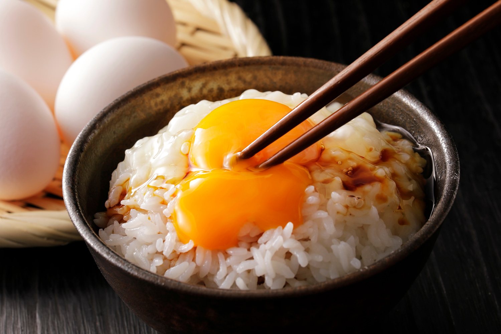

Tamago Kake Gohan (TKG)

Description
Probably the simplest complete food. The name basically translates to
"egg on rice". It's a simple dish originated from Japan, consist of
two main Ingredients: rice and egg. Complete of the macronutrients
needed by the body. Why did I choose this dish to be on the list?
- Because it's my poor man's comfort food.
Ingredients
- 1 cup freshly cooked Japanese short-grain rice
- 1 fresh egg (preferably pasteurized for safety)
- 1 teaspoon soy sauce
- Optional toppings:
- Chopped spring onions
- Furikake (Japanese rice seasoning)
- Nori (seaweed strips)
- Sesame seeds
Steps
- Cook Japanese short-grain rice until hot and fluffy, then place 1 cup into a serving bowl.
- Crack a fresh egg directly onto the hot rice.
- Drizzle 1 teaspoon of soy sauce over the egg and rice.
- Stir the egg, soy sauce, and rice together vigorously until creamy and well-mixed.
- Add optional toppings like spring onions, furikake, nori strips, or sesame seeds for extra flavor.
- Serve immediately and enjoy your Tamago Kake Gohan!